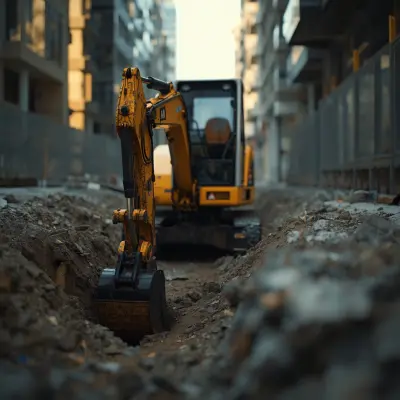

Jasa Coring Beton Presisi Tinggi
Pembuatan lubang silinder sempurna menembus aspal dan beton bertulang baja tanpa menimbulkan retakan mikro pada dinding samping bangunan Anda.
- Diamond Cutting. Mata bor tajam menembus besi beton keras.
- Sewa Jack Hammer. Tersedia armada pemecah beton terlengkap.
Concrete Cutting & Bongkar Baja
Hentikan kerugian finansial akibat downtime mesin pabrik. Kami mengeksekusi pembongkaran pondasi tebal dengan dukungan alat berat khusus yang ekstra tangguh.
- Operator Bersertifikat K3. Keselamatan kerja adalah prioritas mutlak.
- Sewa Mini Excavator. Armada siap terjun untuk proyek skala industri.

Coring Modern vs Bobok Manual
Alasan mutlak mengapa kontraktor cerdas meninggalkan palu godam konvensional dan beralih ke spesialis Diamond Cutting kami.
Ekstra Cepat
Mengiris struktur tebal dalam hitungan jam, bukan minggu. Mengurangi biaya harian operasional proyek secara signifikan.
Bebas Retak
Tanpa getaran destruktif layaknya jackhammer usang. Sangat aman dan wajib untuk renovasi gedung tua komersial.
Potongan Mulus
Hasil akhir sangat presisi, siap pasang pipa/kabel, tanpa perlu plester ulang sisa coran yang biasanya berantakan.
Hemat Anggaran
Tidak ada lagi biaya tak terduga akibat tulang pondasi utama yang tidak sengaja hancur atau instalasi yang terputus.
Alat Terlengkap
Menjadi pusat jasa persewaan peralatan bangunan terkemuka, kami sediakan stamper hingga excavator terdekat.
Respons Sigap
Armada kami siap diterjunkan untuk mengatasi proyek mangkrak dadakan di seluruh wilayah Bandung Raya hari ini juga.
Ulasan Nyata Google Maps
Dipercaya oleh ratusan kontraktor dan pemilik proyek di industri Jasa Persewaan Peralatan Bangunan & Pembongkaran.
"Layanan sangat memuaskan, tim responsif terhadap peintaan tambahan, sangat sigap. Terimakasih kak."
Amania Nurul
Via Google Maps"layanan ramah dan sangat memuaskan kualitas terbaik, mantap."
cahiyaputri
Via Google Maps"Tempat penyewaan alat berat terlengkap di cimahi."
Faiz Ramadhaniar Rifqi
Via Google Maps"Menyediakan sewa alat-alat untuk pembangunan proyek. Pelayanannya sangat baik."
nur patawan
Via Google Maps"Pelayanan terbaik. Responsivitas, Ketepatan waktu, Kualitas, Profesionalisme terjaga dengan sangat baik."
Mia Rosmiati / Ros Rosita
Via Google Maps"Layanan sangat memuaskan, tim responsif terhadap peintaan tambahan, sangat sigap. Terimakasih kak."
Amania Nurul
Via Google Maps"layanan ramah dan sangat memuaskan kualitas terbaik, mantap."
cahiyaputri
Via Google Maps"Tempat penyewaan alat berat terlengkap di cimahi."
Faiz Ramadhaniar Rifqi
Via Google Maps"Menyediakan sewa alat-alat untuk pembangunan proyek. Pelayanannya sangat baik."
nur patawan
Via Google Maps"Pelayanan terbaik. Responsivitas, Ketepatan waktu, Kualitas, Profesionalisme terjaga dengan sangat baik."
Mia Rosmiati / Ros Rosita
Via Google MapsTanya Jawab Seputar Layanan
Berapa estimasi biaya jasa coring beton di Bandung?
Bagaimana cara memotong struktur beton tanpa merusaknya?
Apakah melayani persewaan alat berat di luar Kota Bandung?
Amankan Jadwal Konstruksi Anda!
Jangan biarkan proyek tertunda karena masalah pembongkaran atau kekurangan alat berat. Konsultasikan bersama ahlinya sekarang.